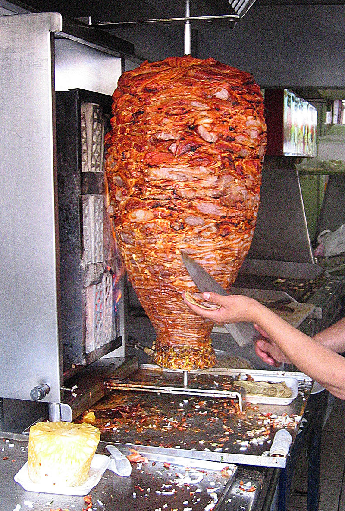

La introducción de la carne de cordero asada verticalmente en un trompo, similar a cómo se prepara la carne para los tacos al pastor, se puede rastrear hasta la invasión árabe de la Península Ibérica en el siglo VIII. Los árabes trajeron consigo la técnica de cocinar la carne en este estilo y la costumbre de consumir carne de esta manera.
Después de la conquista de México por parte de los españoles, algunos ingredientes y técnicas de cocina provenientes de la cultura árabe en la Península Ibérica llegaron al continente americano. Entre estos ingredientes estaban las especias, como el comino y el cilantro, que son elementos fundamentales en la preparación de la carne para los tacos al pastor. También la idea de cocinar la carne verticalmente en un trompo y servirla en tortillas de maíz proviene de esa influencia.
A lo largo del tiempo, la población mexicana adaptó y fusionó estos elementos con su propia cultura y tradiciones culinarias, dando lugar a los tacos al pastor tal como los conocemos hoy en día. Es importante reconocer la diversidad y el mestizaje cultural en la formación de la cocina mexicana, que incluye influencias indígenas, españolas, africanas y árabes, entre otras.
